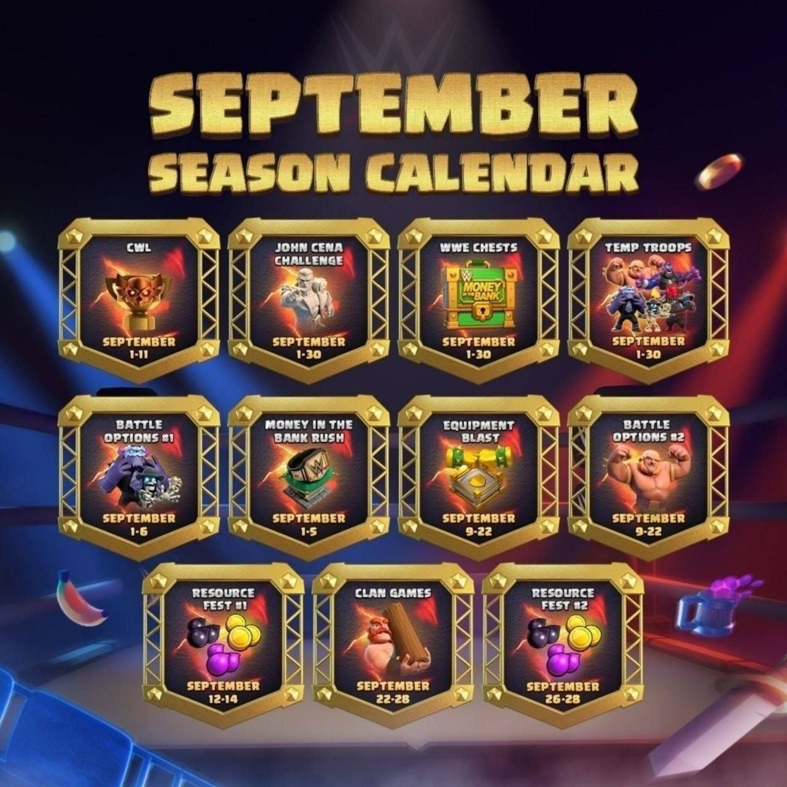

۱ تا ۳۰ سپتامبر
WWE Hero Skins و Scenery
رویداد همکاری WWE با اسکینهای قهرمان و یک Scenery ویژه فصل.
تقویم سپتامبر ۲۰۲۶ را اینجا گذاشتیم؛ تصویر بالا همان تصویری است که فرستادی و فهرست پایین با اعلام رسمی Supercell تکمیل شده است.

رویدادهای اصلی ماه، از ابتدا تا پایان
رویداد همکاری WWE با اسکینهای قهرمان و یک Scenery ویژه فصل.
جمعآوری Challenger Contract از چستهای رویداد و تلاش برای پیدا کردن پایگاه جان سینا.
چستهای ویژه WWE در طول ماه در چند فعالیت ظاهر میشوند.
Gold Pass فصل سپتامبر با اسکین Jey Uso برای Minion Prince.
چهار نیروی موقت در چرخه فعالیتهای سپتامبر حضور دارند.
بخش اول Battle Options؛ با رسیدن به درصد مشخصی از تخریب، انتخاب اضافه در نبرد ظاهر میشود.
جمعآوری Gold از فعالیتهای مختلف برای پیشروی در مسیر مشترک کلن.
هفت حریف، در قالبهای 15v15 یا 30v30؛ مرحله اصلی CWL سپتامبر.
بازگشت موقت Superstars به Army Camp با قواعد Friend/Foe.
رویداد جمعآوری Tag Tickets و دریافت پاداشها و Champ Medals.
دور دوم Battle Options با چند انتخاب مختلف در میانه نبرد.
اسکین Grand Warden در ادامه همکاری WWE.
افزایش تولید Gold، Elixir و Dark Elixir برای ۴۸ ساعت؛ برای TH8 به بالا.
بازگشت مجموعهای از آیتمهای ظاهری Mash-A-Rama به Shop.
Hero Equipment برای TH8 به بالا در دوره مشخصشده در سطح حداکثری قرار میگیرد.
چالشهای تیمی کلن برای جمعکردن امتیاز و بازکردن مسیر پاداشها.
دور دوم تقویت تولید منابع در پایان ماه.
آخرین اجرای این فعالیت در سپتامبر.